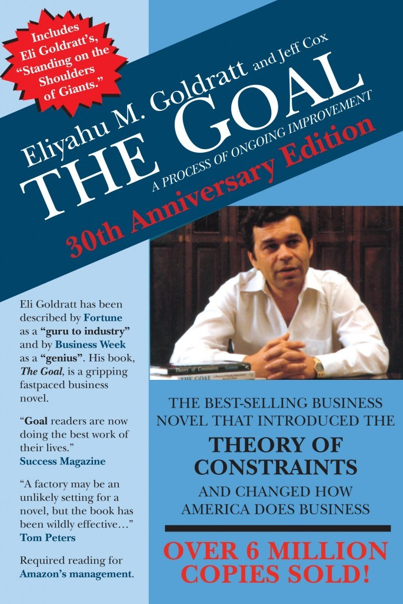

"The Goal: A Process of Ongoing Improvement"
- Read on 2014-06-12
- Rating: ️️️️️
- Format: 🎧 (11 hours 45 minutes)
This is a business book, telling the story of a factory manager, and eliminating bottlenecks, and ultimately helping to make money for your company. I liked the story approach of this book (as, lets be honest, so many business books are boring). No, you shouldn't read it for literature sake. Yes, it will give you some ideas on helping to achieve The Goal.
One quick side-note: the audiobook is great, since it has other voices for different characters, background sounds (for when they're walking around the plant/factory), and nice touches like that. Very well done.
- Prior: Words of Radiance
- Next: Good to Great